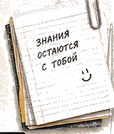
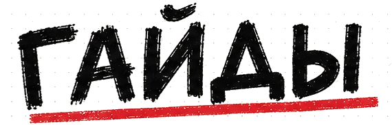
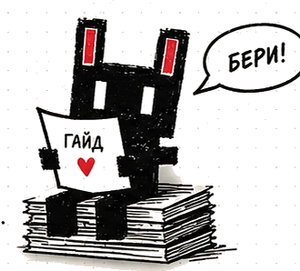
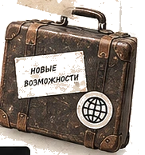
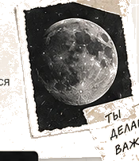
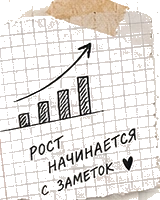

Домашка без списывания
Как учиться с ИИ и реально понимать, а не просто сдавать.
ДОМАШКА
Забрать

Бесплатные штуки, которые я проверила на себе.
Как учиться с ИИ и реально понимать, а не просто сдавать.
ДОМАШКА
ЗабратьПошаговый гайд, как перенести свои GPTs, промпты и настройки без потерь.
ПЕРЕЕЗД
ЗабратьГотовый промпт, чтобы справиться с синдромом самозванца и вернуть уверенность.
ЛУНА
ЗабратьШаблон и промпты, чтобы автоматизировать рутину и освободить время для себя.
РАЗГРУЗЗабратьПошаговый список, чтобы ваши тексты находили в поиске и приводили людей.
НОВОЕ
ЗабратьКак выбрать инструмент под свою работу.
ГАЙДЗабратьПамять, проекты, задания и голос.
ГАЙДЗабратьТри уровня подключения.
ГАЙДЗабратьРобот отдаёт ссылку или файл.
ГАЙДЗабратьПроверка сенсации за 10 минут.
ГАЙДЗабратьЧетыре ящика вместо ста вкладок.
СКОРОСкоро